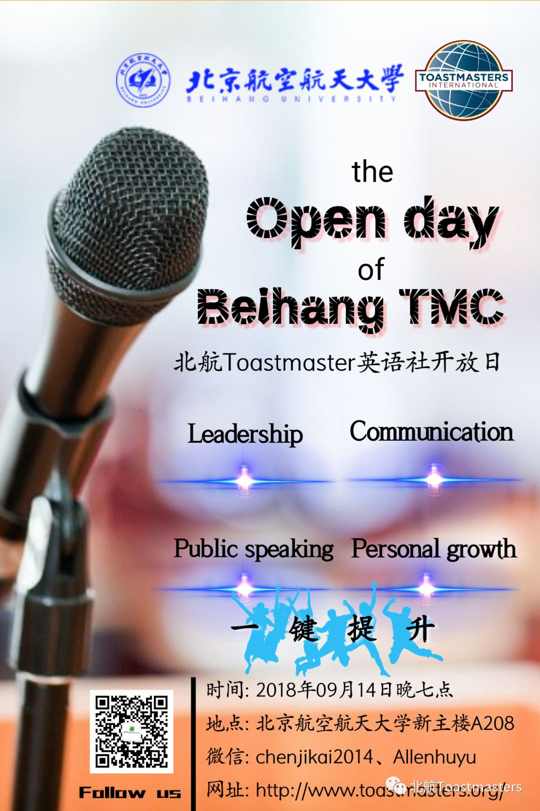
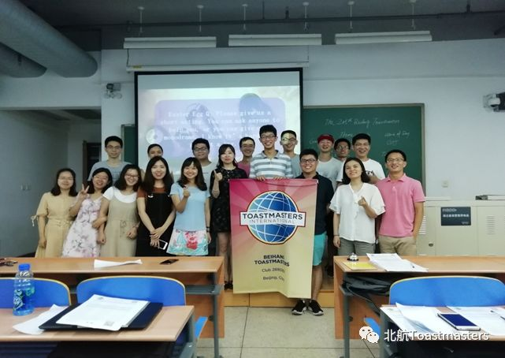
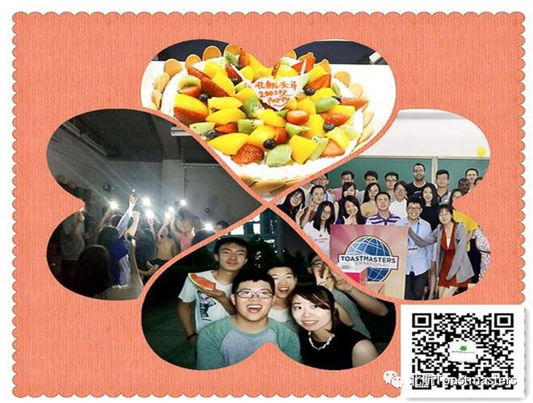
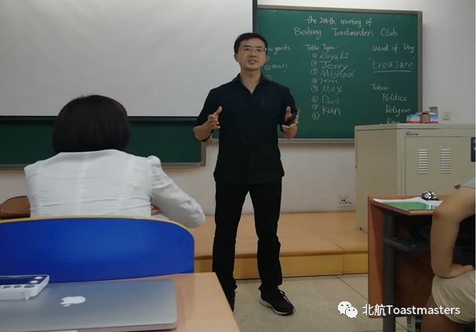
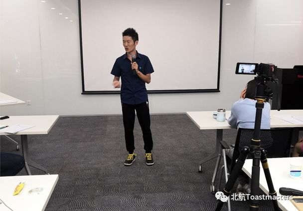
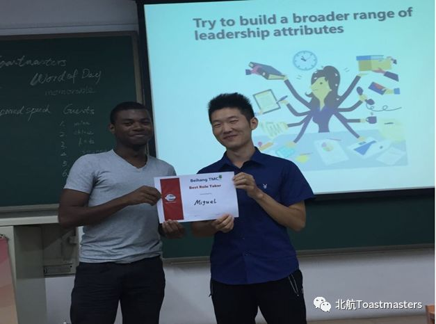
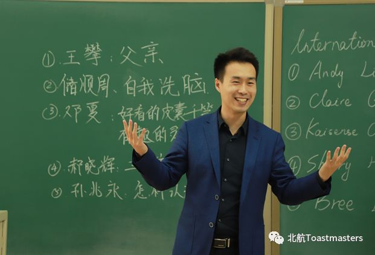
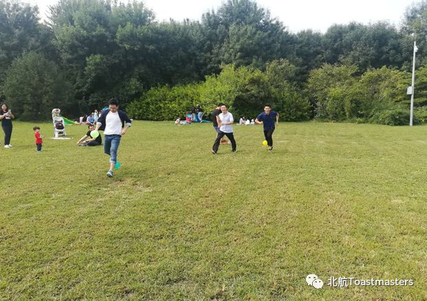

北航Toastmasters国际英语演讲俱乐部是一个面向校内外提供专业化、高标准英语的交流平台，旨在提升公共演讲和人际沟通能力，培养战略领导和管理能力，增强自信力，并结识校内外、国内外各行各界朋友的英文演讲平台。
Beihang Toastmasters International English Speaking Club is a communication platform to provide people inside and outside of campus with specialized and high-standard English, aiming at improving public speaking and interpersonal communication ability, cultivating strategical leading and management ability, reinforcing confidence, and getting acquainted with friends in all field from inside and outside of campus and at home and abroad as well.

北航Toastmasters自创始以来，就一直秉承Toastmasters International总部的优良传统，始终坚持非营利性的服务理念，努力为学校师生和校外各界朋友提供高质量的服务。
Since Beihang Toastmasters was found, it always insists on the great tradition of Toastmasters International Headquarters, sticking to the non-profit service concept, with every effort, offering high-quality service for teachers and students from inside and outside of campus.

此外,北航头马俱乐部是一个全球的会员体系,除了享受总部资料、官网资料以外,还是一个全球的学习交流平台。很多高校以及世界500强企业都有自己内部的头马俱乐部，如:哈佛大学,哥伦比亚大学等各高校,以及微软、汇丰银行、摩根士丹利等,尤其是对需要去外企面试的同学来说, 头马俱乐部员往往会为其增添一块敲门砖。
Furthermore, Beihang Toastmasters Club is a world-wide membership system, sharing data on both headquarters’ and official website, as well as a global learning and communication platform. A variety of High schools and world top 500 companies have their own internal toastmasters’ clubs, such as Harford University, Columbia University, Microsoft, HSBC, Morgen Stanley and the like. Especially for students who want to have an interview in foreign companies, Toastmastersclub is a stepping-stone.
北航Toastmasters每周五晚在本院校举行一次，每次常规会议时间约2个小时左右，每次例会都有着固定的形式，由不同的会员在会议中扮演不同的角色。会议总共由三部分组成：即兴演讲环节、备稿演讲环节以及点评环节。
Beihang Toastmasters holds the regular meeting with fixed pattern on every Friday’s night at Beihang University, lasting two hours or so, and each member plays a different role in the meeting. The meeting consists of three sessions: impromptu speaking session, prepared speaking session and evaluation session.
我们能提供什么？
英文演讲平台

口语帝的诞生地

结识帅哥美女和外籍朋友的机会

领袖是练出来的

丰富的出游活动～

首先来参加会议就可以啦！不用做特别准备。在会议开始后，主持人需要你举手做一次简单的自我介绍。抓住机会，努力地迈出第一步吧！
Come and join us! The host will invite you to give a brief introduction when the meeting begins. Seize the opportunity and Step out!
你还在等什么？快来加入我们吧！本周五晚上7点，俱乐部将举行新学期的开放日活动，欢迎新同学来参加，我们在新主楼A208等待你的光临！

联系人:
Kaisense(陈纪凯)：
Tel：18810956303 WeChat：chenjikai2014
了解更多关于Toastmasters的信息请登录www.toastmasters.org

Time: 19:00-21:00, Friday, 14th September
Venue: Room A208, New Main Building, Beihang University
Beihang Toastmasters Club is a students' union.
At the same time, we belong to a non-profit international organization called Toastmasters International.
Toastmasters International (TI) is a non-profit educational organization that operates clubs worldwide for the purpose of helping members improve their communication, public speaking, and leadership skills. You can find us by the following map of Beihang University.

https://mp.weixin.qq.com/s/eaUOynPUkVw5VL6BjtsfOQ
本页为抢救式本地归档，图文已永久保存。